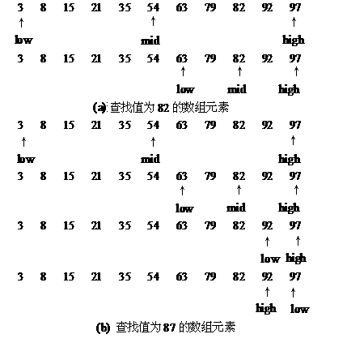
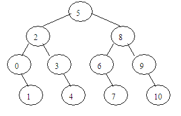

二分法是一个非常高效的算法，它常常用于计算机的查找过程中。
先玩一个小游戏。预先给定一个小于100的正整数x，让你猜，猜测过程中给予大小判断的提示，问你怎样快速地猜出来？
这样猜测最快，先猜50，如果猜对了，结束；如果猜大了，往小的方向猜，再猜25；如果猜小了，往大的方向猜，再猜75；…，每猜测1次就去掉一半的数，就这样可以逐步逼近预先给定的数字。这种思想就是二分法。
在用二分法进行查找时，查找对象的数组必须是有序的，即各数组元素的次序是按其值的大小顺序存储的。其基本思想是先确定待查数据的范围（可用 [left,right] 区间表示），然后逐步缩小范围直到找到或找不到该记录为止。具体做法是：先取数组中间位置（mid=(left+right)/2）的数据元素与给定值比较。若相等，则查找成功；否则，若给定值比该数据元素的值小（或大），则给定值必在数组的前半部分[left,mid-1]（或后半部分[mid+1,right]），然后在新的查找范围内进行同样的查找。如此反复进行，直到找到数组元素值与给定值相等的元素或确定数组中没有待查找的数据为止。因此，二分查找每查找一次，或成功，或使查找数组中元素的个数减少一半，当查找数组中不再有数据元素时，查找失败。
二分法查找是一种非常高效的搜索方法，主要原理是每次搜索可以抛弃一半的值来缩小范围。其时间复杂度是O(log2n)，一般用于对普通搜索方法的优化。
二分法的适用情况一般满足以下几点：（1）该数组数据量巨大，需要对处理的时间复杂度进行优化；（2）该数组已经排序；（3）一般要求找到的是某一个值或一个位置。
【例1】二分查找。
有若干个数按由小到大的顺序存放在一个一维数组中，输入一个数x，用二分查找法找出x是数组中第几个数组元素的值。如果x不在数组中，则输出“无此数！”。
（1）编程思路。
设有一数组a[n]，数组中的元素按值从小到大排列有序。用变量low、high和mid分别指示待查元素所在区间的下界、上界和中间位置。初始时，low=0，high=n-1。
1）令 mid = (low+ high) /2 。
2）比较给定值x与a[mid]值的大小
若a[mid] == x ，则查找成功，结束查找；
若a[mid]> x ，则表明给定值x只可能在区间low ~ mid-1内，修改检索范围。令high=mid-1，low值保持不变；
若a[mid]< x ，则表明给定值x只可能在区间mid+1~high内，修改检索范围。令low=mid+1，high值保持不变。
3）比较当前变量low和high的值，若low≤high，重复执行第1）、2）两步，若low>high，表明数组中不存在待查找的元素，查找失败。
例如，设一有序的数组中有11个数据元素，它们的值依次为{3，8，15，21，35，54，63，79，82，92，97}，用二分查找在该数组中查找值为82和87的元素的过程如图1所示。

图1 二分查找的查找过程
图1（a）所示为查找成功的情况，仅需比较2次。若用顺序查找，则需比较9次。图2（b）所示为查找不成功的情况，此时因为low>high，说明数组中没有元素值等于87的元素。得到查找失败信息，也只需比较4次。若用顺序查找，则必须比较12次。
二分查找过程通常可用一个二叉判定树表示。对于上例给定长度的数组，二分查找过程可用图2所示的二叉判定树来描述，树中结点的值为相应元素在数组中的位置。查找成功时恰好走了一条从根结点到该元素相应结点的路径，所用的比较次数是该路径长度加1或结点在二叉判定树上的层次数。所以，折半查找在查找成功时所用的比较次数最多不超过相应的二叉判定树的深度[log2n]+ 1。同理，查找不成功时，恰好走了一条从根结点到某一终端结点的路径。因此，所用的比较次数最多也不超过[log2n] + 1。

图2 描述折半查找过程的二叉判定树
（2）源程序。
#include <iostream>
using namespace std;
int main()
{
const int n=20;
int a[n]={1,6,9,14,15,17,18,23,24,28,34,39,48,56,67,72,89,92,98,100};
int x,low,high,mid;
cout<<"Please input a number x:";
cin>>x;
low =0; high =n-1; // 置区间初值
while (low<=high)
{
mid = (low+high)/2 ;
if (x == a[mid]) break; // 找到待查记录
else if (x<a[mid]) high=mid-1; // 继续在前半区间进行检索
else low=mid+1; // 继续在后半区间进行检索
}
if (low<=high) // 找到待查记录
cout<<x<<" is a["<<mid<<"]"<<endl;
else
cout<<"No found!"<<endl;
return 0;
}
【例2】求平方根 。
编写一个程序计算x的平方根，x保证是一个非负整数。
（1）编程思路。
已求5的平方根为例，说明应用二分法求平方根的思路。
设 f(x)=x2 ，在 x∈[1,5]的范围内， f(x) 随着 x的增大而增大的（单调递增），这就给二分法创造了条件。
首先，令浮点型 left 和 right 的初值分别为1和5，然后通过比较 left 和 right 的中点 mid 处 f(x) 的数值与5的大小来选择子区间进行逼近。有以下两种情况：
1）如果 f(mid)>5，说明当前mid比5的平方根大，应当在 [left,mid]的范围内继续逼近，故令 right=mid;
2）如果 f(mid)<5，说明当前 mid比5的平方根小，应当在 [mid, right]的范围内继续逼近，故令 left=mid。
当 right−left<10−5时结束，此时已经满足精度要求，即为所求的近似值。
（2）源程序。
#include <stdio.h>
double f(double x)
{
return x * x;
}
int main()
{
int x;
double left,right,mid;
scanf("%d",&x);
while (x!=0)
{
left=1.0, right=1.0*x;
while ((right-left)>1e-5)
{
mid=(left+right)/2;
if (f(mid)<x) left=mid;
else right=mid;
}
printf("%.4f\n",mid);
scanf("%d",&x);
}
return 0;
}
【例3】木材加工 。
木材厂有一些原木，现在想把这些木头切割成一些长度相同的小段木头（木头有可能有剩余），需要得到的小段的数目是事先给定的，切割时希望得到的小段越长越好。
编写程序，输入原木的数目 N 和需要得到的小段的数目 K以及各段原木的长度，计算能够得到的小段木头的最大长度。
木头长度的单位是 cm。原木的长度都是正整数，要求切割得到的小段木头的长度也是正整数。
例如，输入原木的数目 N 和需要得到的小段的数目 K 分别为3和8，输入的3段原木的长度分别为124、224和319，则能够切割得到的小段的最大长度为 74。
（1）编程思路。
这个问题可以采用二分法进行解决。
设left是切割的小段木头的最短长度，right是最大长度，初始时，left为0，right为最长的原木长度加1。
每次取left和right的中间值mid（mid = (left + right) / 2）进行尝试，测试采用当前长度mid进行加工，能否切割出需要的段数K，测试算法描述为：
num = 0;
for (i = 0; i < n; i++)
{
if (num >= k) break;
num = num + len[i] / mid ;
}
如果当前mid值可以加工出所需段数（即num >= k），说明当前mid值偏小，可能有余量，就增大mid值继续试（通过让left = mid的方法来增大mid）；不符合要求，当前mid值加工不出所需段数，显然mid偏大了，就减小mid值继续试（通过让right = mid的方法来减小mid）。直到left +1>= right结束尝试，所得的left值就是可以加工出的小段木头的最大长度。
（2）源程序。
#include <iostream>
using namespace std;
int main()
{
int n, k, len[10000], i, left, right, mid,num;
cout<<"请输入原木的数目 N 和需要得到的小段的数目 K ："<<endl;
cin>>n>>k;
right = 0;
cout<<"请输入各段原木的长度："<<endl;
for (i = 0; i < n; i++)
{
cin>>len[i];
if (right < len[i]) right = len[i];
}
right++;
left = 0 ;
while ( left + 1 < right)
{
mid = (left + right) / 2;
num = 0;
for (i = 0; i < n; i++)
{
if (num >= k) break;
num = num + len[i] / mid ;
}
if ( num >= k )
left = mid;
else
right = mid;
}
cout<<"能够切割得到的小段的最大长度为 "<<left<<endl;
return 0;
}